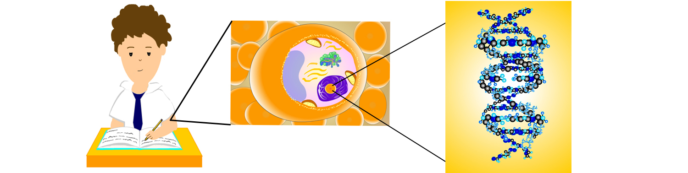
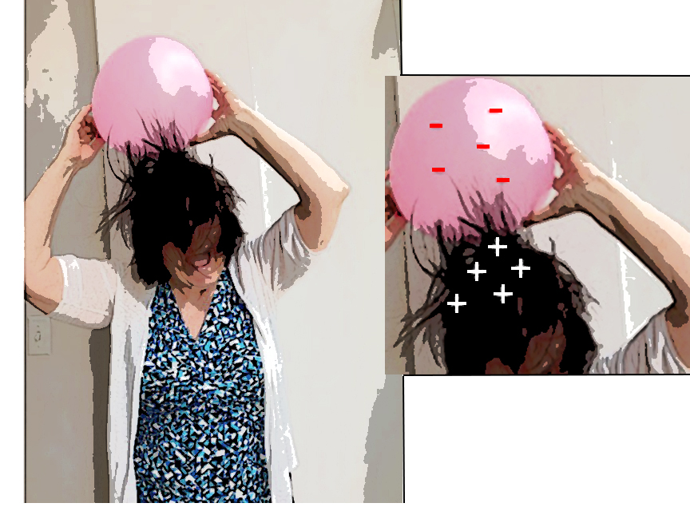
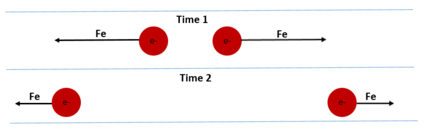
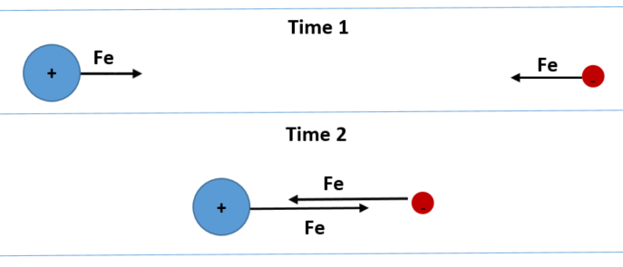
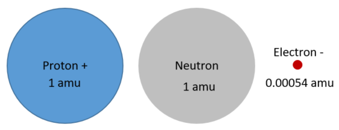

Atoms: The Basics
Atoms: Introduction
All matter—desks, books, clothes, and even
your body, as well as all other animals and plants—is made up of atoms. Atoms are very tiny. For example, if
you had a very powerful microscope, you could “zoom” in to the level of a cell in your body (the middle picture below). If you keep zooming
in more and more, past the cell's chromosomes, at the level of the DNA, then you would be able to see the atoms that make up DNA.
(This is shown below on the right.) The individual atoms that make DNA are represented as the lighter and darker
blue and black spheres in the last picture.

Atoms are the smallest units of matter that
can exist by themselves or in combination with other atoms. Smaller units of matter—such as electrons, protons,
and neutrons—generally do not exist (for a very long time) on their own; they quickly combine with other particles
that are nearby to form atoms! (By the end of this unit, you should have some idea why.)
Because of this, atoms are often called the
“building blocks” of all matter. Atoms combine with other atoms
to make molecules, DNA, chromosomes, cells, your body, and everything else in the universe!
Why should I care about atoms? Because atoms make up just about everything, it is very important to have a basic understanding of atoms. It's important to understand what atoms are made of and the forces that keep atoms together and let them bond with other atoms to make larger objects (including DNA).
Parts of atoms: protons, neutrons, and electrons. All atoms have a nucleus, which is the center of the atom. The nucleus of atoms is made of protons and neutrons. Atoms also have electrons, which are much smaller than protons or neutrons.
Electrons orbit—or move around—the nucleus
at very high speeds. Two different kinds of atoms (or elements) are shown below. The atom on the left (hydrogen)
has one proton and one electron. Hydrogen is the only type of atom/element that does not have any
neutrons in its nucleus. The atom on the right (an oxygen atom) has 8 protons, 8 electrons, and 8 neutrons
(some protons and neutrons are not visible).

Important note:
In the figure above, the circles around the atoms don't actually exist. The circles are called "Energy
circles." These Energy circles represent about how much energy the
electrons on that circle have
(due to their motion and their
potential for even more motion). These
circles are not how electrons move around the nucleus; their
paths or orbitals can be very complex, and are not simple "circles" (click here to see how electrons actually move around the nucleus).
For more information about Energy circles, you can click here.
Charges of protons,
neutrons, and electrons. A very important fact to remember is that these three different parts of atoms also have three different
electric charges:
- Protons are positively charged (represented as a positive sign, "+"). You can think of "pro" as "positive." If you are "pro" something, that means you like (or are positive about) it.
- Neutrons have no charge. You can remember that neutrons are "neutral."
- Electrons are negatively charged (represented as a negative sign, "-"). Some people find it hard to remember that electrons have a negative charge. One way to remember is that if you're shocked by electricity, which is the movement of electrons, you're going to be pretty negative!
Electric force. Particles that have opposite charges (e- and p+) attract each other. Particles that have the same charge repel (or push each other away). This means that protons (p+), which are positively charged, repel each other. Also, electrons (e-), which are negatively charged, repel each other.
We call the force between charged particles the "electric force." The electric force is named after electrons.
We call the force between charged particles the "electric force." The electric force is named after electrons.

Because of the electric force, electrons and protons attract each other.
- Electrons orbit around the nucleus because of the attractive electric force between electrons and protons. In other words, the protons pull the electrons toward them, keeping the electrons orbiting around the nucleus.
- This is kind of like our solar system, where the sun is the nucleus in the center and the planets are like the electrons. Just like the pull from gravity causes the planets to orbit around the sun, the electric force's pull between oppositely-charged particles causes the electrons to orbit around the nucleus.
Because of the electric force, electrons repel (or push away) other electrons.
- This is why electrons are pretty spread out in atoms.
- You may wonder why protons stay together in the nucleus then. Neutrons actually hold protons together in the nucleus by another type of force, called the "strong" force. This type of force is more advanced, though. (You may learn more about the strong force in high school or college; or, you can do some research on your own to learn about it if you want.)
Why the electric force is important. The electric force is very important to understand because it
is responsible for atoms to even exist!! Our bodies (which are made of lots of carbon, oxygen, and hydrogen atoms)
would not exist if it were not for the electric force! Trees and other plants would not exist! Animals would
not exist! Planets would not exist! (You get the idea.)
The electric force is also responsible for a lot of things you may not have realized.
- For example, the "stickiness" you feel on your fingers after you eat a piece of sugary candy is caused by electric forces.
- The little shock you get when you touch a door knob (especially if the air is dry) is caused by electric forces.
- If you rub a balloon on your hair, your hair will "stick" to the balloon. This is because when the balloon material rubbed your hair, electrons (e-) from your hair moved to the balloon. Now the balloon is negatively charged, which is shown by the minus (-) signs on the balloon. The minus signs (-) mean that there are electrons on the balloon (since electrons are negatively charged). Your hair is positively charged. Your hair will be attracted to the balloon because of the force. (This is shown in the picture below.)

Strength of the Electric
force. Let's say you have two electrons, which both have a negative
charge. As the two electrons move farther from each other, the electric force pushing them away from each other
gets smaller. This is shown below, where the length of the arrows represents the strength of the forces.
If you have two oppositely-charged particles (shown below), the electric force pulling them toward each other increases as they get closer to each other.

If you have two oppositely-charged particles (shown below), the electric force pulling them toward each other increases as they get closer to each other.

In general, the strength of the electric force increases the closer the two charged particles are. And the strength of the electric force decreases as the charged particles move away from each other.
For more information about the strength of the electric force (Coulomb's Law), you can click here.
Masses of protons, neutrons, and electrons.
Many people do not understand that all atoms—even the smallest
ones that make up air—have some mass and weight! These masses are very small, and people might not be able to detect their mass,
but they are made of matter. And all matter has mass! When you feel the wind (moving air) hitting your face,
you can feel this because the atoms (and groups of atoms, called molecules) that make up the air have some mass.
The parts of atoms have masses (even though they are very very very
small, from a human's point of view!).
- Protons and neutrons have about the same mass (and weight). The mass of one proton or neutron is what scientists call one "atomic mass unit" or "amu" (pronounced "AY-EM-YOU"). One amu is equal to 0.00000000000000000000000166 grams. This is so small, we can't feel the mass (or weight) of one proton or neutron. But, they do have SOME mass (and weight).
- An electron has even less mass than a proton or neutron, or about 1/1837 the mass (and weight) of a proton or neutron. This means it takes 1,837 electrons to equal the mass of just one proton or neutron.
The relative masses of protons, neutrons, and electrons are represented below (as a proportion of their volume):

The mass of an atom is the sum of the masses of its three parts (protons, neutrons, and electrons). So, if you know how many protons, neutrons, and electrons an atom has, you can figure out the mass of the atom.
Or, you can just look up the mass of different types of atoms in the Periodic table of elements.